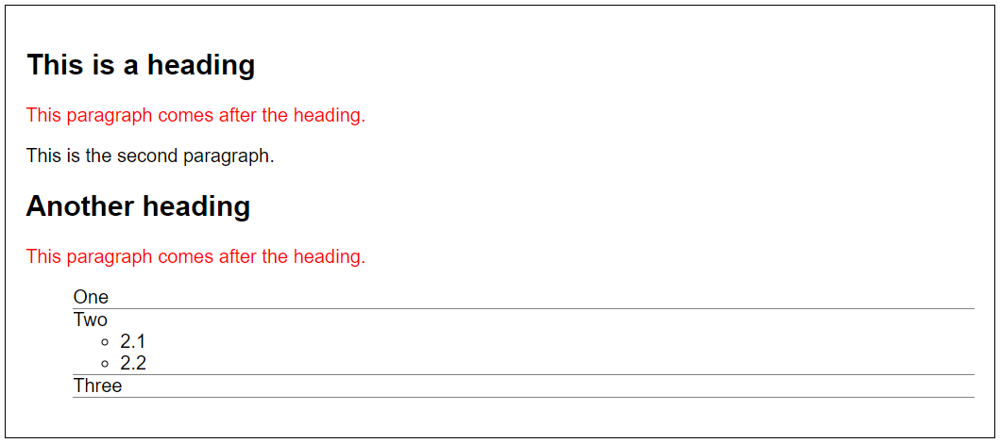

This is a heading
This paragraph comes after the heading.
This is the second paragraph.
Another heading
This paragraph comes after the heading.
- One
- Two
- 2.1
- 2.2
- Three
Bekijk de volgende afbeelding en zorg met behulp van alleen CSS selectors dat de elementen binnen het <article> element er als volgt uitzien:
Pas de CSS styling toe binnen het <style> element van de pagina.
Het is niet toegestaan om de HTML binnen het <body> element aan te passen
This paragraph comes after the heading.
This is the second paragraph.
This paragraph comes after the heading.